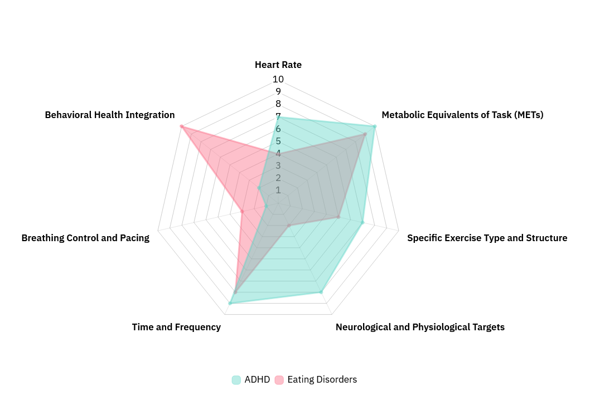

Exercise Px
Clinical exercise prescription
The 7 Specifiers Framework captures the core domains needed to specify, interpret, and compare exercise interventions across disorders and diagnoses with greater fidelity, reproducibility, and therapeutic precision. As shown in this radar diagram example, current literature suggests that a key difference between ADHD and eating disorders is the role and need for clinician or specialist oversight: ADHD interventions may prioritize consistent motor-cortex engagement over a sustained period of time, while eating-disorder applications may require careful retraining of the relationship with exercise away from unrealistic body goals. The framework’s goal is not to maximize every specifier equally, but to identify which specifiers deserve greater or lesser priority in shaping clinically meaningful outcomes.
Visit ExercisePx.com